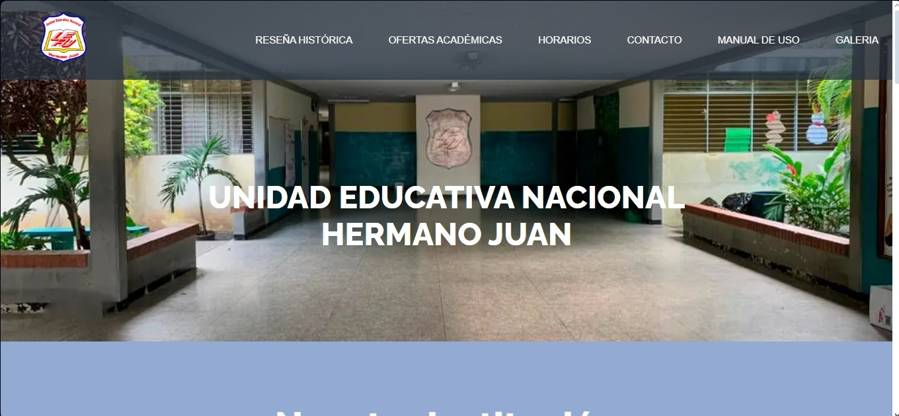
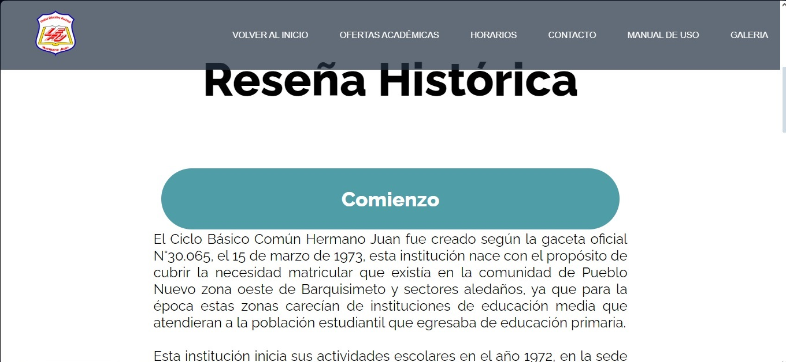
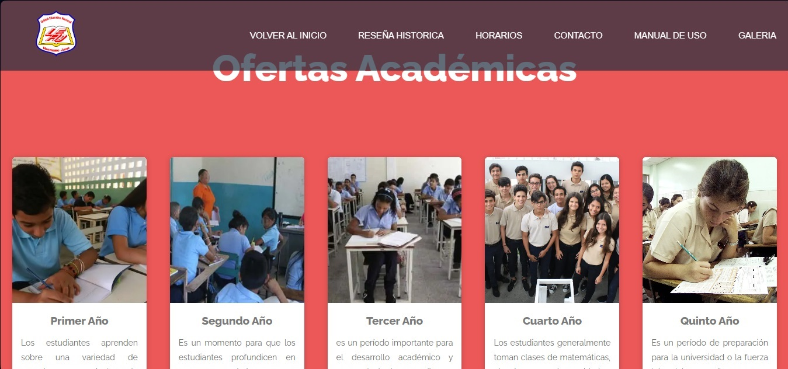
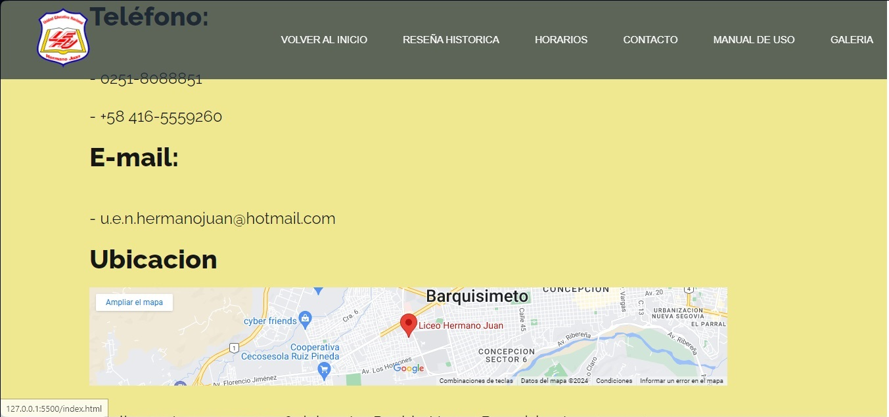

El sitio web que se realizó tiene como principal objetivo ofrecer la información necesaria, concisa y precisa a los estudiantes, profesores, representantes y cualquier grupo aledaño o necesitado de información sobre la Unidad Educativa Nacional Hermano Juan. Se expone como un sitio web de manera estática que presentará contenidos informativos organizados al menos en las siguientes secciones tentativas:
El apartado de inicio presenta la institución educativa y sus valores. Incluye un logotipo, una breve descripción de la institución y enlaces a otras secciones del sitio web, cuenta con una barra de navegación con dirección a varias secciones del sitio. Prosigue una galería de fotos en el cual se muestran algunos sectores de la institución
Esta sección proporcionar información sobre la historia, la misión, la visión, el comienzo, sus décadas y cómo funciona la institución en la actualidad.
En este se logra apreciar las ofertas académicas que dispone la institución para el público objetivo adicional se encuentra el apartado de horarios en el cual el sitio web proporciona a sus estudiantes censados en sus secciones el fácil y directo acceso a sus horarios de clase, creando una forma rápida y efectiva para la información del usuario. Además, se muestra la sección con los recursos y personal que cuenta el plantel educativo.
Esta sección proporcionar información sobre cómo ponerse en contacto con la institución, como su dirección, número de teléfono y correo electrónico.
